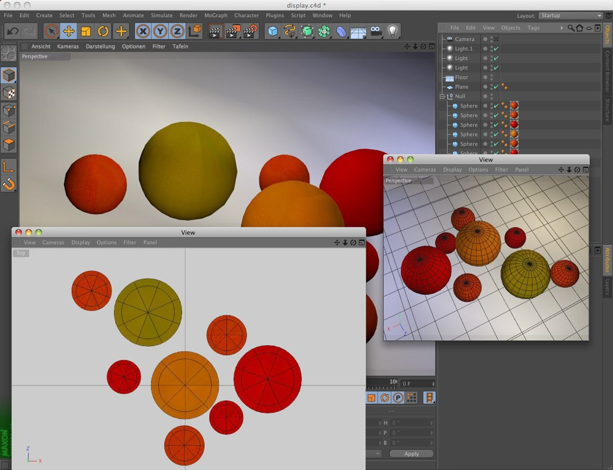
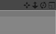

<!DOCTYPE html PUBLIC "-//W3C//DTD HTML 4.01 Transitional//EN">
<!-- saved from url=(0014)about:internet -->
<html>

	<head>
		<meta http-equiv="content-type" content="text/html;charset=utf-8">
		<meta name="generator" content="WICKIE">
		<title>视图和视口</title>
		<meta name="FORMATTER" content="wickie">
		<link href="../../files/wickie.css" type="text/css" rel="stylesheet" media="all">
		<script type="text/javascript" src="../../files/versionAppender.js"> </script>
		<script type="text/javascript" src="../../files/linkRewriter.js"> </script> 
		<!--PAGE_ID "5426"-->
		<!--VATER_ID "1001"-->
		<!--REIHENFOLGE "2"-->
		<!--TITLE "视图和视口"-->
		<!--APPS ""-->
		<!--TYP ""-->
	</head>

<body bgcolor="#e0e0e0" link="black" vlink="#2a2a2a">


<!--NO_SEARCH_START-->
 <span class="link_back"><a href="1000.html" target="_self">手册</a></span> <span class="link_back"><a href="43666.html" target="_self">参考</a></span> <span class="link_back"><a href="43668.html" target="_self">CINEMA 4D</a></span> <span class="link_back"><a href="1001.html" target="_self">CINEMA 4D Prime</a></span>

<div class="in-lite-page in-prime-page in-visualize-page in-broadcast-page in-studio-page in-bodypaint3d-page ">  <div class="page_only_body">
<div class="page_only_apps">             Function available in CINEMA 4D Prime, Visualize, Broadcast, Studio & BodyPaint 3D  </div>
<!--NO_SEARCH_END--><!--INDEX "2","视图和视口",""--><p><span class="HL_group">视图和视口</span></p><p></p>
<p><!--INDEX "1","3D 视图",""--></p>
<p><!--INDEX "1","3D 显示",""--></p>
<p><!--INDEX "1","显示",""--></p>
<p><!--INDEX "7","3D 视图",""--><!--PAGE_COMMAND "视图面板"--></p>
<p><a href="45030.html" target="">选项</a><br><a href="5852.html" target="">查看</a><br><a href="5858.html" target="">摄像机</a><br><a href="5860.html" target="">显示</a><br><a href="11082.html" target="">过滤器</a><br><a href="5861.html" target="">面板</a><br><a href="5593.html" target="">The HUD</a><br></p>
<p>你可以打开任意多个视图面板，每个视图面板有它自己的显示设置。</p>
<p><!-- ***** Vorschaublock ********** --><div id="004762_pre" style="display: block; width: 300px; float: left; height=1%;">	<a href="javascript:dummy();" onclick="change('004762_pre');change('004762');" style= "float: left;"></a>	<a href="javascript:dummy();" onclick="change('004762_pre');change('004762');">	       	     	</a>		<span class="caption"></span></div><div id="004762" style="display: none;z-index:0; width: 1000px; float: left; ">		<a href="javascript:dummy();" onclick="change('004762_pre');change('004762');" style= "float: left;"></a>		<a href="javascript:dummy();" onclick="change('004762_pre');change('004762');"></a>		<span class="caption"></span></div><p> </p></p>
<p>一个视图面板最多可以显示四个视口（一个场景的视图），每个视口都有它自己的显示设置。</p>
<p><p><div class="hint"><span class="HL_hint">提示：<br></span>如果摄像机和显示窗中的某个点之间的距离超过100万个单位，视口显示会出错。</div></p>
<p></p>
<p>在视口右上角有四个图标，点击并按住其中一个，可以进行移动、旋转摄像头、缩放视图的操作，这独立于当前的活动模式。（平板用户需要激活<span class="command">参数</span>菜单的<span class="command">输入设备</span>项中的 <span class="command_value">Graphics Tablet</span> 选项）。最右边的图标可以用来切换活动视图。 </p>
<p><RELEASE_140 Orthogonal views can be rotated around the orthographic axis.></p>
<p>正交视角的视口也可以绕它的正交轴旋转，摄像机会沿其视图的角度旋转。同时按下 <nobr><span class="key">Shift</span></nobr> 键摄像机会以 15° 的增量进行旋转。 </p>
<p></RELEASE_140></p>
<p>关于交互式摄像机导航的所有细节可以在<a href="PREFSNAVIGATION-PREF_NAVIGATION_MAIN_GROUP.html#PREF_NAVIGATION_CAMERA" target="_self"><span class="text_id">摄像机模式</span></a>下找到。</p>
<p><a id="hl_1" name="hl_1"></a><!--INDEX "3","优化视口的显示速度","hl_1"--><p><span class="HL_1">优化视口的显示速度</span></p>
<p><!--INDEX "1","刷新速度",""--></p>
<p><!--INDEX "1","编辑速度",""--></p>
<p><!--INDEX "1","视口速度",""--></p>
<p><!--INDEX "1","优化速度",""--></p>
<p>一个包含许多元素的场景在视口中的导航会很慢，那么怎样解决这个问题呢？</p>
<p><ul>
	<li><a href="PREFSOPENGL-PREF_OPENGL_MAIN_GROUP.html" target="">OpenGL 着色</a>是否激活？<br>几乎所有性能优秀的显卡都支持 OpenGL 着色。<br><br></ul><p><ul><li> 场景中是否包含很多每次改变视图都需要重新计算的生成器对象？<br>CINEMA 4D 在简单的多边形下工作是最快的（指那些没有进行变形、细分曲面等操作的对象）。生成器包含细分曲面、挤出对象、参数化几何体、实例、克隆对象等，所有生成器对象都可以用<a href="5667.html" target="">当前状态转对象</a>或<a href="5664.html" target="">转为可编辑对象</a>命令转换为多边形对象。细分曲面和其他生成器可以临时解除效果（在绿色选框上点击）。记住，隐藏元素不一定有用，因为在软件内部这些对象仍然会被渲染。例如，围绕一个球体来阵列克隆对象，这个球体即使被隐藏了也会在内部参与运算，这样克隆对象才能围绕它阵列。<br><br></ul><p><ul><li> 让多边形的数量保持最少。<br>创建一个包含上百万个点的单个对象会使视口卡顿。在场景中不可见的面不需要精细的细分。对对象包含的多边形数量进行优化不仅会提高视口的刷新速度，还会大大减少渲染时间！<br><br></ul><p><ul><li> 避免在场景中放太多对象。<br>CINEMA 4D 有针对显示有多边形数多但对象数量少的显示优化，场景中包含过多对象会减慢视口视图！大量的空对象会减慢视口视图显示速度，就像一个非常复杂的层级结构。可以的话请把它坍塌成单个对象。通过实例或使用克隆对象复制的对象也会像由这些实例或克隆体组成的单个对象一样减慢视口视图。（<a href="5666.html" target="">链接</a>）。 <br>例如，从 CAD 中导入一个房屋，它的每个元素都是单独的对象，对 CINEMA 4D 来说这是最糟糕的方案。通过群组相似对象可以优化这种场景，如120个窗框和120块窗玻璃可以被合并为2个对象（窗框和窗玻璃）。这个<a href="5666.html" target="">链接</a>命令在这里可以发挥很大的作用。确认在你的工作流程中有足够的时间来优化场景。这个优化步骤跟接下来所有完成场景的步骤一样重要。<br><br></ul><p><ul><li> 各种显示模式的经验——尤其是<a href="45030.html#PLUGIN_CMD_13859" target="">细节级别</a>设置。<span class="command">较不精确</span>的细节级别可以让视口视图显示速度<span class="command">较快</span>。<br><br></ul><p><ul><li> <a href="TDISPLAY.html" target="">显示</a>模式可以通过显示标签来为对象层进行定义，它可以减少资源消耗物体可能产生的影响。<br><br></ul><p><ul><li> 你在场景中看到的对象或元素越多，显示的速度就越慢。别忘了对象可以在视口的<span class="command">过滤器</span>菜单中进行隐藏。<br><br></ul><p><ul><li> 不是所有的物体一定要在视口中以高分辨率显示，显示质量可以在视口预设<a href="DBASEDRAW-BASEDRAW_GROUP_DISPLAY.html#BASEDRAW_DATA_DISPLAYINACTIVE_ENABLED" target="">非活动对象</a>标签中降低，也就是说只有活动对象以高质量显示，其他对象则显示为立方体或其他基础几何体。<br><br></ul><p><ul><li> Complex XPresso Expressions 总是参与计算。如果在你的场景中不是真的需要某个 Expression ，请停用相应的 Xpresso 标签。<br><br></ul><p></p>
<p>

</p>
  </div>  </div>
</body>

</html>